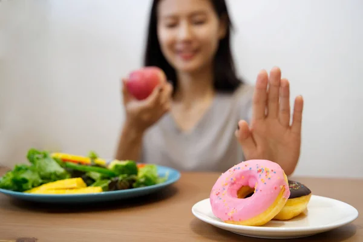

CONOCE Y REFLEXIONA
CONSECUENCIAS DE UNA MALA ALIMENTACIÓN
Lo que consumimos con frecuencia puede influir en nuestra energía, concentración, salud y en los hábitos que vamos formando.
Cansancio y poca energía
Una alimentación poco variada puede hacer que durante el día sintamos menos energía para realizar nuestras actividades.
Elegir alimentos variados y mantenernos hidratados ayuda a mantenernos activos durante la jornada escolar.
Dificultad para concentrarnos
La alimentación también está relacionada con nuestro desempeño diario. No alimentarnos adecuadamente puede afectar cómo nos sentimos durante las clases.
Una buena alimentación puede acompañar nuestros hábitos de estudio y ayudarnos a mantener una rutina más equilibrada.
Consumo frecuente de ultraprocesados
Los productos ultraprocesados pueden resultar atractivos por su sabor, precio, publicidad o facilidad para conseguirlos.
Por eso es importante observar qué consumimos con frecuencia y aprender a comparar diferentes opciones.

Hábitos que podemos mejorar
Nuestras decisiones alimentarias pueden convertirse en hábitos. Por eso, pequeños cambios pueden ayudarnos a construir elecciones más saludables.
No se trata de prohibir alimentos, sino de aprender a elegir de manera informada y equilibrada.

¿Qué influye en nuestras decisiones?
Lo que elegimos puede estar influenciado por el sabor, el precio, la publicidad, nuestros amigos, la familia y la disponibilidad de los productos.
Reconocer estos factores nos permite pensar antes de elegir.
“No se trata solo de comer, sino de aprender a elegir.”